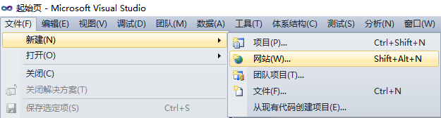
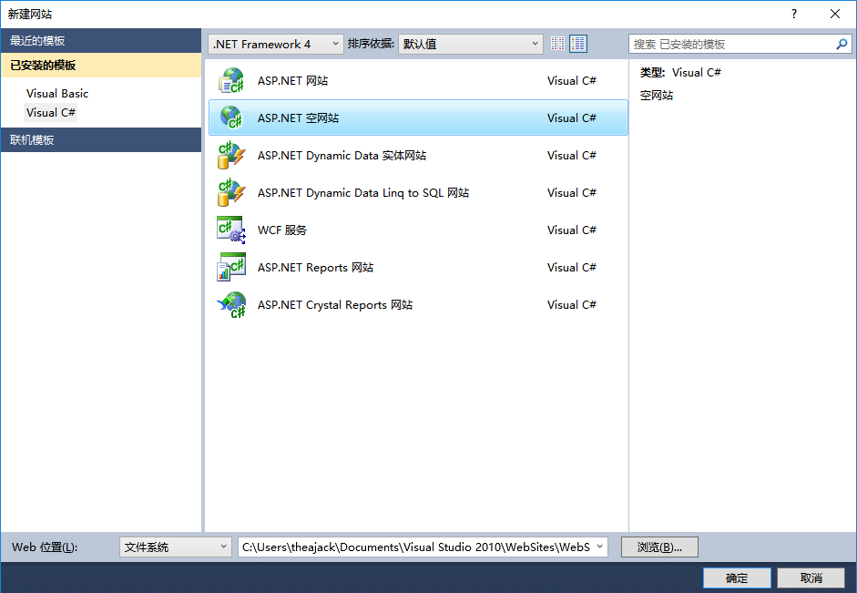
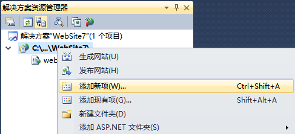
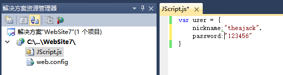
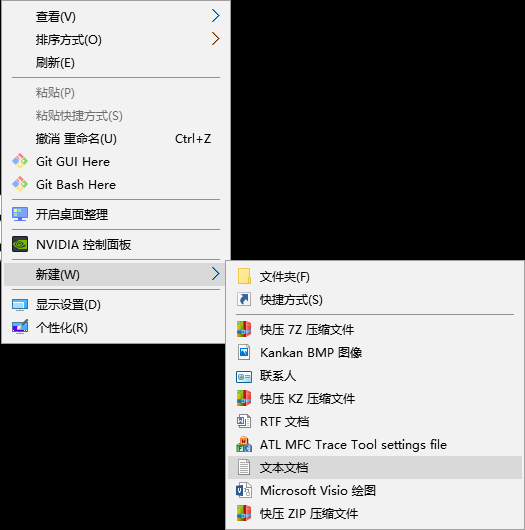
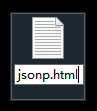
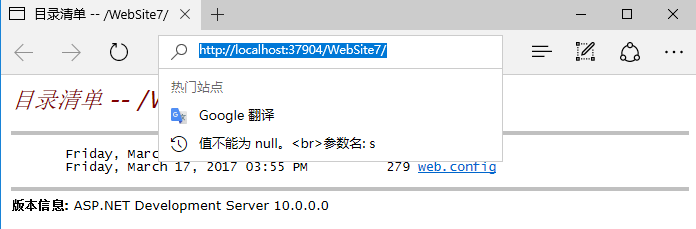
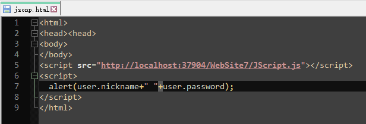

Title
置顶
加精
0
0
0
date
由于同源策略，一般来说位于a.com的网页无法与不是a.com的服务器沟通，
如果有这样的需求，就必须跨域，jsnop就是跨域数据访问的方式之一。
jsnop是一种依靠开发人员的聪明才智创造出的一种非官方跨域数据交互协议，网上关于jsnop原理与优缺点的博客很多很多，本人也就不再一一赘述，
其实记住两点就好：
1.它是利用script标签实现跨域；
2.它只支持get请求。
本人有跨域这个需求是在写github pages的时候，想在上面访问自己搭建的服务器上的数据，ajax在这个时候就无能为力了，于是本人学习了一下jsonp，
并把它封装到本人自娱自乐的jetterjs类库中，该博客地址的数据访问用的就是这种技术。
废话说的有点多了，接下来本人不才，尝试把我学习jsonp的过程一步一步还原一下。
1.模拟跨域并简单跨域
服务器端我使用的ASP.net,我用的是visual studio 2010(java也是同理，本人没有实践)，客户端就随便新建一个html文件就可以啦。以下是代码和图示：
1.服务器搭建

1.打开visual studio，依次点击文件>新建>网站

2.选择ASP.NET空网站，点击确定

3.右击生成的网站，点击添加新项
4.选择JScript文件，点击添加

5.打开JScript.js文件，写入如下代码，保存
var user = {
nickname="theajack",
password="123456"
}
都做好保存之后，按F5启动网站，启动完成之后就不用管了，弹出来的页面也不要关闭。现在就相当于有一个localhost的服务器上面有一个user的数据，不过暂时先储存在js文件里，这么做是为了更深刻理解利用js跨域。接下来模拟另一台服务器的客户端。
都做好保存之后，按F5启动网站，启动完成之后就不用管了，弹出来的页面也不要关闭。现在就相当于有一个localhost的服务器上面有一个user的数据，不过暂时先储存在js文件里，这么做是为了更深刻理解利用js跨域。接下来模拟另一台服务器的客户端。
2.新建客户端
客户端极其简单，就是一个html文件：

1.右击桌面，新建文本文档

2.右击桌面，重命名为jsonp.html并保存

3.打开刚启动的ASP.NET网站，复制地址栏的链接

4.使用代码编辑工具或记事本打开，贴入如下代码，把下划线部分代码替换成你自己的链接，也就是复制好的链接+"JScript.js"
<html>
<head><head>
<body>
</body>
<script src="http://localhost:37904/WebSite7/JScript.js"></script>
<script>
alert(user.nickname+" "+user.password);
</script>
</html>
贴好之后不要忘记保存哦，然后就大功告成了！哈哈！让我们回到桌面，双击jsonp.html文件，或用浏览器打开它，结果如下，我们成功的把服务器端
的一个数据访问到了，由于html文件是在文件系统里打开的，而不是localhost，这就是跨域了，原理是不是一目了然，就是通过script标签来访问服务
器上的数据，当然这么简单的跨域我们是拒绝的，我们需要服务器动态处理我们的请求，并返回不同的结果，而不仅仅是简单调用一下服务器上的函数
或者变量，也就是说我们要用GET请求实现传参然后由服务器已回调函数的参数将结果传给客户端，不多废话了，直接上步骤:
2.GET请求、回调传值
1.服务器改动
这次我们不需要服务器端的js文件了，我们直接请求
0
评论


评论列表
最近热帖
GitHub
GitHub
GitHub
友情链接
Jetter.js
个人主页
人人单车
2048 plus
石头理财
突破防线
迷宫
炸弹大作战
人人单车纯净版